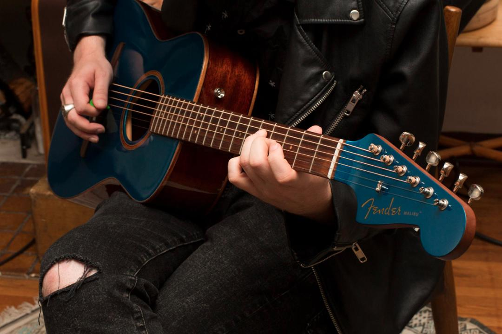

An acoustic guitar is a musical instrument in the string family. When a string is plucked, its vibration is transmitted from the bridge, resonating throughout the top of the guitar. It is also transmitted to the side and back of the instrument, resonating through the air in the body, and producing sound from the sound hole.[1] The original, general term for this stringed instrument is guitar, and the retronym 'acoustic guitar' distinguishes it from an electric guitar, which relies on electronic amplification. Typically, a guitar's body is a sound box, of which the top side serves as a sound board that enhances the vibration sounds of the strings. In standard tuning the guitar's six strings[2] are tuned (low to high) E2 A2 D3 G3 B3 E4.
Guitar strings may be plucked individually with a pick (plectrum) or fingertip, or strummed to play chords. Plucking a string causes it to vibrate at a fundamental pitch determined by the string's length, mass, and tension. (Overtones are also present, closely related to harmonics of the fundamental pitch.) The string causes the soundboard and the air enclosed by the sound box to vibrate. As these have their own resonances, they amplify some overtones more strongly than others, affecting the timbre of the resulting sound.
The guitar likely originated in Spain in the early 16th century, deriving from the guitarra latina.[3] Gitterns (small, plucked guitars), were the first small, guitar-like instruments created during the Spanish Middle Ages with a round back, like that of the lute.[4] Modern guitar-shaped instruments were not seen until the Renaissance era, when the body and size began to take a guitar-like shape.
The earliest string instruments related to the guitar and its structure were broadly known as vihuelas within Spanish musical culture. Vihuelas were string instruments that were commonly seen in the 16th century during the Renaissance. Later, Spanish writers distinguished these instruments into two categories of vihuelas. The vihuela de arco was an instrument that mimicked the violin, and the vihuela de Penola was played with a plectrum or by hand. When it was played by hand it was known as the vihuela de mano. Vihuela de mano shared extreme similarities with the Renaissance guitar as it used hand movement at the sound hole or sound chamber of the instrument to create music.[5]
By 1790 only six-course vihuela guitars (six unison-tuned pairs of strings) were being created and had become the main type and model of guitar used in Spain. Most of the older 5-course guitars were still in use but were also being modified to a six-coursed acoustical guitar. Fernando Ferandiere's[6] book Arte de tocar la Guitarra Española por Música (Madrid, 1799) describes the standard Spanish guitar from his time as an instrument with seventeen frets and six courses with the first two 'gut' strings tuned in unison called the terceras and the tuning named to 'G' of the two strings. The acoustic guitar at this time began to take the shape familiar in the modern acoustic guitar. The coursed pairs of strings eventually became less common in favor of single strings
Around 1850, the form and structure of the modern guitar was established by Spanish guitar maker Antonio Torres Jurado who increased the size of the guitar body, altered its proportions, and made use of fan bracing, which first appeared in guitars made by Francisco Sanguino in the late 18th century. The bracing pattern, which refers to the internal pattern of wood reinforcements used to secure the guitar's top and back to prevent the instrument from collapsing under tension,[8] is an important factor in how the guitar sounds. Torres' design greatly improved the volume, tone, and projection of the instrument, and it has remained essentially unchanged since.